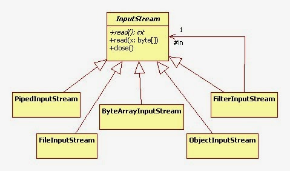

Class IOStreams
java.lang.Object
com.example.javacoredemo.iostreams.IOStreams
- Author:
- Yasir Satti
The InputStream class of the java.io package is an abstract superclass that represents an input stream of bytes. Since InputStream is an abstract class, it is not useful by itself. However, its subclasses can be used to read data. Some of them are:- FileInputStream
- ByteArrayInputStream
- ObjectInputStream
Methods of InputStream (9)
The InputStream class provides different methods that are implemented by its subclasses. Here are some of the commonly used methods:
- read() - reads one byte of data from the input stream
- read(byte[] array) - reads bytes from the stream and stores in the specified array
- read(byte[] b, int off, int len) - Reads up to len bytes of data from the input stream into an array of bytes.
- available() - returns the number of bytes available in the input stream
- mark() - marks the position in the input stream up to which data has been read
- reset() - returns the control to the point in the stream where the mark was set
- markSupported() - checks if the mark() and reset() method is supported in the stream
- skips() - skips and discards the specified number of bytes from the input stream
- close() - closes the input stream
The OutputStream class represents an output stream of bytes. Since OutputStream is an abstract class, it is not useful by itself. However, its subclasses can be used to write data.
Since InputStream is an abstract class, it is not useful by itself. However, its subclasses can be used to read data. Some of them are:- FileOutputStream
- ByteArrayOutpStream
- ObjectOutputStream
- See Also:
- Java InputStream
, Java InputStream ( video )
*

, Java OutputStream
*
-
Constructor Summary
Constructors -
Method Summary
-
Constructor Details
-
IOStreams
public IOStreams()
-
-
Method Details
-
demo
public void demo()Demonstrates methods of IOinputStream class.- Since:
- 1.0
-